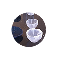

Переработка океанической пластмассы в посуду
Дизайнерский коллектив Supercyclers из Австралии перерабатывает собранную на пляжах пластмассу в стильную посуду. Коллекция кухонной посуды Marine Debris Bakelite Collection была придумана одновременно как дизайнерский, бизнес- и эко-проект.
Дизайнерский коллектив Supercyclers из Австралии перерабатывает собранную на пляжах пластмассу в стильную посуду. Коллекция кухонной посуды Marine Debris Bakelite Collection была придумана одновременно как дизайнерский, бизнес- и эко-проект.
28 янв. 2018 г.